VRayHDRI
VRayHDRI Overview
The VRayHDRI map can be used to load high dynamic range images (HDRI) and map them onto the environment. V-Ray supports most of the standard HDRI-environment mapping methods. Since V-Ray 2.0, this texture can also be used to load other file formats.
Tiled OpenEXR and TIFF Files
This texture can also be used to efficiently load t iled OpenEXR and tiled TIFF files (tiled TIFF files usually have a .tx or .tex extension). Tiled OpenEXR and TIFF files allow only portions of the textures to be loaded at various resolutions. This allows V-Ray to load only the parts of the textures that are needed for the rendering.
You can convert many common image file formats to tiled OpenEXR files using the img2tiledexr tool. You can also convert all files in a scene using the V-Ray Bitmap to VRayHDRI converter script. Conversion to tiled TIFF can be done using the maketx tool from the OpenImageIO library.
Tiled TIFF files have the advantage that they can store 8-bit color components, whereas OpenEXR stores at least 16 bits. This means that tiled 8-bit TIFF textures are smaller on the disk and take up less RAM while rendering.
Tags and Environment Variables in Bitmap Names
VRayHDRI allows the use of named tags enclosed with the characters < and >, which are replaced at render time with other strings.
Textures that have any of the render-time tags listed below will not be resolved properly by the 3ds Max Asset Tracker (i.e. when creating .zip archives of the scene). However, they will work correctly with the V-Ray automatic transfer of assets for distributed rendering.
Tags for Multi-Tiles
Some modeling applications allow to specify a different bitmap file for different portions of a model based on the UV coordinates of that model. For example, one file may be used for UVs in the range [0,0] x (1,1), another file may be used for UVs in [1,0] x (2,1) and so on. There are several ways to specify the correct file for each tile, and in each case, a different format for the file name is used in the File node. This is done by using special tags in the file name, which are replaced at render time with a particular string based on the UVs of the current shading point.
In the following section, we assume that each UV tile has unique integer coordinates (u,v) based on the integer part of the UVs inside it. For example, the UV tile [0,0] x (1,1) has coordinates (0,0), the UV tile [1,0] x (2,1) has coordinates (1,0) and so on.
Upper-case tags usually assume the tile coordinates start from 1, whereas lower-case tags assume the tiles start from 0.
Mari Tiles and the <UDIM> Tag
Mari forms the file name of textures using a four-digit number equal to 1000+(u+1+v*10). So the UV tile [0,0] x (1,1) is assigned the number 1001, UV tile [0,1] x (1,2) is assigned 1011 and so on. To specify a Mari-style tiled texture, use the <UDIM> tag in the file name, which is then replaced with the respective four digits, for example, my_texture_<UDIM>.exr becomes my_texture_1001.exr and so on during rendering.
Mudbox Tiles and the <UVTILE> Tag
Mudbox can form the file name in many ways, but the default format is to use _uU_vV in the file name where U=u+1 and V=v+1 are the tile coordinates plus one. So the UV tile [0,0] x (1,1) is marked with _u1_v1, UV tile [0,1] x (1,2) is marked with _u1_v2 and so on. To specify this format, use the <UVTILE> tag in the file name. If you use lower case letters <uvtile>, then the tile coordinates will start from 0, instead of one, so tile [0,0] x (1,1) will be resolved to _u0_v0 and so on. For example, my_texture<UVTILE>.exr becomes my_texture_u1_v1.exr and so on during rendering.
The $U and $V Tags
You can also specify the u and v coordinates of the tiles separately by using the $U and $V tags. Each of them is expanded to the respective 1-based coordinate of the tile. For example, if the file name is specified as my_texture_$U_$V.exr, this becomes my_texture_1_1.exr and so on. You can use lower-case tags to make the tile coordinates start from zero, instead of 1, for example my_texture_$u_$v.exr becomes my_texture_0_0.exr and so on.
You can put a number right after the $ sign to specify how many digits you want in the resulting tile coordinates, for example my_texture_$2U_$2V.exr is expanded to my_texture_01_01.exr and so on.
Environment Variables
You can include environment variables in the form ${VAR_NAME} which are replaced with the value of the respective environment variable during rendering. For example, if the file name is specified as ${TEX_PATH}\${PROJ_FOLDER}\mytexture.exr, then V-Ray will look up the environment variables TEX_PATH and PROJ_FOLDER and replace the tags with their values. Suppose that TEX_PATH is set to c:\textures and PROJ_FOLDER is set to proj1, then the final bitmap file name will be expanded as c:\textures\proj1\mytexture.exr
User-Defined Properties
 You can specify node user properties between the < and > brackets. At render time, V-Ray takes the tag name and looks it up in the node's User Defined properties for the shaded object to determine the value of the tag. This allows a single VRayHDRI texture to use different files on different scene nodes. For example, you could specify the file name in VRayHDRI as c:\path\to\texture\<objtag>_diffuse.png and then for the objects that use the material, in their Object Properties dialogue, add a User-Defined property string with values like objtag=head or objtag=body, etc. Then during rendering, V-Ray will attempt to load and use the texture file c:\path\to\texture\head_diffuse.png for the first object and c:\path\to\texture\body_diffuse.png on the second.
You can specify node user properties between the < and > brackets. At render time, V-Ray takes the tag name and looks it up in the node's User Defined properties for the shaded object to determine the value of the tag. This allows a single VRayHDRI texture to use different files on different scene nodes. For example, you could specify the file name in VRayHDRI as c:\path\to\texture\<objtag>_diffuse.png and then for the objects that use the material, in their Object Properties dialogue, add a User-Defined property string with values like objtag=head or objtag=body, etc. Then during rendering, V-Ray will attempt to load and use the texture file c:\path\to\texture\head_diffuse.png for the first object and c:\path\to\texture\body_diffuse.png on the second.
Parameters
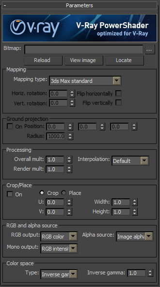 Bitmap - the file name from which the bitmap is loaded. Currently supported formats are HDR, EXR, PNG, BMP, TGA, SGI, JPG, PIC, TIF, PSD, VRIMG. Image file lists in the form of IFL files are also supported.
Browse - click this button to browse for an HDR image.
Reload - forces V-Ray to reload the texture from the hardrive.
Locate - opens the folder in which the texture file is located in a new windows explorer window.
Mapping
These parameters determine how the VRayHDRI texture is mapped.
Mapping type - the following mapping types are supported:
-
Angular - environment mapping in angular mode;
-
Cubic - environment mapping in cubic mode;
-
Spherical - environment mapping in spherical mode;
-
Mirrored ball - environment mapping in mirror ball mode;
-
3ds Max standard - the mapping type is determined by the Coordinates section.
Horiz. rotation - allows rotation of the environment map left and right. Ignored when the Mapping type is 3ds Max standard.
Flip horizontally - flips the environment horizontally. Ignored when the Mapping type is 3ds Max standard.
Vert. rotation - allows rotation of the environment map up and down. Ignored when the Mapping type is 3ds Max standard.
Flip vertically - flips the environment vertically. Ignored when the Mapping type is 3ds Max standard.
Ground Projection
These controls allow you to "flatten" the bottom part of an environment map onto a virtual plane. This is useful for rendering CG objects when you only have an environment map.
The ground projection only works for environment maps; it doesn't work if the texture is assigned to a dome light.
On - enable or disable the ground projection.
Position - the X, Y and Z coordinates of a point in 3D space where the center of the environment map is projected.
Radius - a projection radius. Can be used to control the "scale" of the projection.
Example: Ground Projection
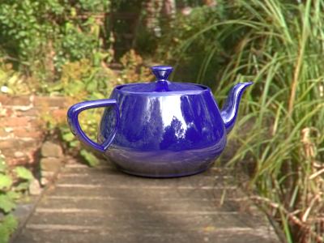
Ground projection is disabled; though it almost looks like the teapot is sitting on the planks, the perspective doesn't match.
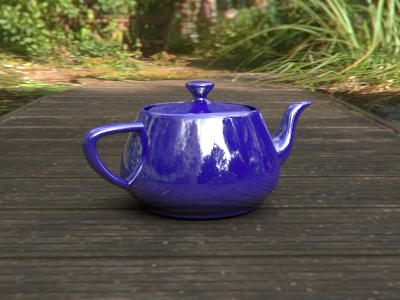
Ground projection is enabled; the illusion that the teapot is sitting on the planks is more convincing as the perspective matches.
Processing
Overall multiplier - a control for the overall brightness of the image. This multiplier affects both rendering and the material editor.
Render multiplier - controls the brightness of the HDRI image only when rendering; it has no effect on the display of the image in the material editor.
Interpolation - determines how the image is interpolated from the pixel values. See the Examples for a demonstration of this effect. Possible values are:
-
Bilinear - the image values are interpolated from four pixels in the bitmap. This is the fastest interpolation method, but the result is not continuous (non-smooth) and may produce artifacts when the map is used for displacement or bump mapping.
-
Bicubic - the image values are interpolated from sixteen pixels in the bitmap. This is the slowest method, but the results are smooth without too much blur.
-
Biquadratic - the image values are interpolated from nine pixels in the bitmap. This method is faster than the Bicubic interpolation, but may smooth the image too much.
-
Default - the interpolation type is chosen automatically depending on the bitmap format to match the behavior of the standard 3ds Max Bitmap texture. For HDR and EXR images, the interpolation is Bilinear, and for all other formats - Bicubic.
Example: The Interpolation Parameter
This example shows the effect of the different interpolation methods. The images below show a teapot displaced with this texture:
Displacement texture
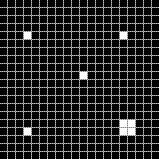
Zoomed displacement texture with pixel boundaries shown
Notice how the different interpolation methods produce slightly different results with different smoothness.
Interpolation is Bilinear
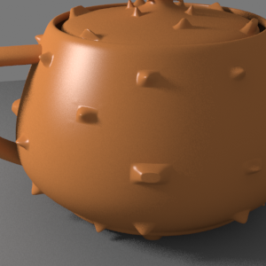
Interpolation is Bicubic
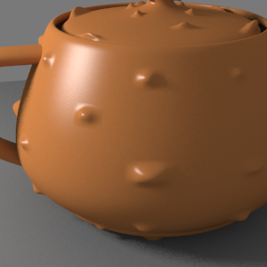
Interpolation is Biquadratic
Crop/Place
The controls in this group let you crop the texture or reduce its size for custom placement. Cropping a texture means reducing it to a smaller rectangular area than it originally had. Cropping doesn't change the scale of the texture.
Placing a texture lets you scale the map and place it anywhere within its tile. Placing can change the texture's scale, but shows the entire texture. The four values that specify the placement and size of the cropping or placement region are all animatable. Cropping and placement settings affect the texture only as it's used for this map and any instances of the map. They have no effect on the texture file itself.
On - Turn on to use the cropping or placement settings.
Crop - enables cropping.
Place - enables placing.
U/V - Adjusts the texture location - specifies the location of the top left corner of the image.
Width/Height - Adjusts the width and height of the texture or crop area.
RGB and Alpha Source
These controls allow the user to specify how the color and alpha of the resulting texture are derived.
RGB output - specifies the source for the color of the texture:
-
RGB color - the normal texture color;
-
Alpha as gray - the color of the texture is the alpha channel converted to a grayscale color;
-
Intensity as gray - the texture converted to grayscale colors based on the intensity of the colors (red+green+blue)/3
Alpha source - determines how the texture alpha is computed:
-
Image alpha - from the alpha channel of the bitmap image, if present (and 1.0 if the image has no alpha channel);
-
Intensity - the alpha is taken from the intensity of the bitmap image colors (red+green+blue)/3;
-
None (opaque) - the alpha channel of the bitmap image is ignored and the VRayHDRI texture always returns 1.0 for alpha.
Mono output - determines the value of the texture when used as a floating-point texture (f.e. for glossiness values in mateirals, amount values, opacity values etc):
-
RGB intensity - the mono output is taken from the bitmap color intensity (red+green+blue)/3;
-
Alpha - the mono output is taken from the bitmap alpha.
Color Space
Type - this parameter allows the user to manually specifiy the color space of the .hdr image so that the inverse curve can be applied to make the image in a linear color space
-
None - no correction is applied
-
Inverse gamma - when this mode is selected the color space is controlled through the Inverse Gamma parameter
-
sRGB - the .hdr image is in sRGB color space
-
From 3ds Max - the gamma is controlled from 3ds Max (customize -> preferences -> Gamma and LUT -> Input Gamma)
Inverse gamma - a gamma-correction value for the image. For example, if the bitmap was saved to disk with a 2.2 gamma correction, you need to enter 0.4545 to remove that correction for the rendering.
Tiled Texture Options
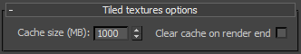 These options are shared between all instances of the VRayHDRI texture; changing them in one texture affects all other textures.
Tiled texture cache size - the size of the cache for tiled OpenEXR files, in megabytes. When the texture cache is full, part of the tiles will be flushed to make space for loading new tiles as needed.
Clear cache on render end - if enabled, the texture cache is flushed at the end of each frame. This may save some RAM, but will cause the texture tiles to be reloaded on each frame.
Time
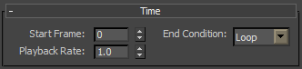 The options in this rollout allow the user to control the playback options when a sequence of textures is loaded.
Start frame - this parameter allows the user to offset the beginning of the animation by a given number of frames.
Playback Rate - this is a multiplier for the speed of the animation.
End conditions - this parameter specifies the playback mode of the animation - i.e. what will happen when the final frame of the sequence is reached.
-
Loop - the animation is looped by skipping to the first frame once it has finished
-
Ping pong - the animation is looped by playing it backwards once the last frame has been reached and then playing it forward again when the first frame is reached
-
Hold - the animation is played just once
Coordinates
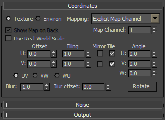 These parameters are used when the Mapping type is set to 3ds Max standard. They are the regular 3ds Max mapping parameters as found in the standard 3ds Max Bitmap texture.
Bitmap to VRayHDRI converter
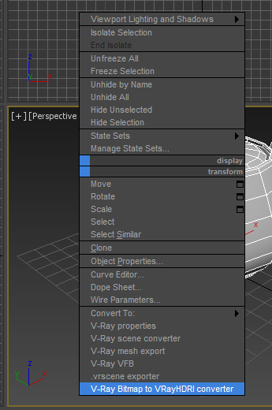 V-Ray includes a MaxScript tool for converting standard 3ds Max Bitmap textures to VRayHDRI textures, with the option to automatically convert the texture files to tiled OpenEXR files. The tool can be invoked by right-clicking in any viewport and selecting "V-Ray Bitmap to VRayHDRI converter" (if the menu item is missing, execute the registerVRayMenus() MaxScript command in the MaxScript listener).
Once you select the converter from the menu, the converter dialogue appears:
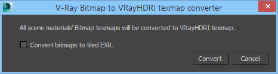
If you turn on the Convert bitmaps to tiled EXR files option, the converter script will automatically invoke the img2tiledexr tool to convert non-exr textures to tiled OpenEXR ones. If the option is disabled, the original bitmap file names will be used.
It is generally a good practice to save the scene before running the converter and to verify that everything is converted correctly afterwards.
Notes
-
Since V-Ray 2.0, VRayHDRI will load the texture the first time it is needed during the actual rendering, rather than at the start of a frame. Textures that are not needed (for example, because their materials are not needed for the particular camera angle) will not be loaded at all.
-
When using tiled OpenEXR or TIFF textures, it is recommended to turn on the Filter maps for GI optio n in the Global Switches section; otherwise V-Ray will be forced to almost always load the most detailed version of the texture.